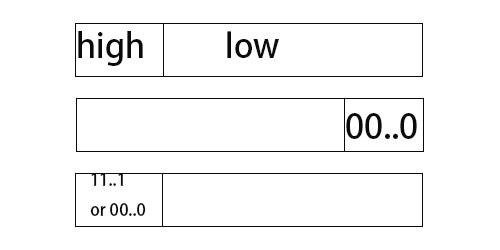
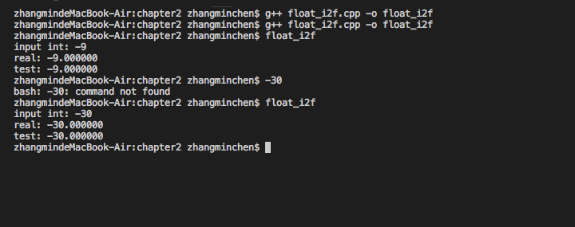

阅读深入理解计算机系统，书中的很多实践的练习值得尝试。
show bytes 1 2 3 4 void show_bytes(byte_pointer start, size_t len) //这里的len表示从start开始 //包括start，例如ab ed 这样，每2个数字为一个单位 //总共有几个单位？
show_bytes的使用，具体能够打印类型为short、long和double的c语言对象的字节表示：
1 2 3 4 5 6 7 8 9 10 11 12 13 14 15 16 17 18 19 20 21 22 23 24 25 26 27 28 29 30 31 32 33 34 35 36 37 38 39 40 41 42 43 44 45 46 47 48 49 50 51 52 53 54 55 56 57 58 59 60 61 62 63 64 65 66 67 68 69 70 71 72 73 74 75 76 77 78 79 80 81 82 83 84 85 86 87 88 89 90 91 92 93 94 95 96 97 98 99 100 101 102 103 104 105 106 107 108 109 110 111 112 113 114 115 116 117 118 119 120 121 122 123 124 125 126 127 128 129 130 131 132 133 134 135 136 137 138 139 140 141 142 143 144 145 146 147 148 149 150 151 152 153 154 155 156 157 158 159 160 161 162 163 164 165 166 167 168 169 170 /* $begin show-bytes */ /* $end show-bytes */ /* $begin show-bytes */ using namespace std; typedef unsigned char *byte_pointer; //unsigned char * 显示一位 void show_bytes(byte_pointer start, size_t len) { size_t i; //int k=0; for (i = 0; i < len; i++) printf (" %.2x" , start[i]); //line:data:show_bytes_printf //buf[k++]=start[i]; printf ("\n" ); } void show_int(int x) { show_bytes((byte_pointer) &x, sizeof(int)); //line:data:show_bytes_amp1 } void show_float(float x) { show_bytes((byte_pointer) &x, sizeof(float )); //line:data:show_bytes_amp2 } void show_pointer(void *x) { show_bytes((byte_pointer) &x, sizeof(void *)); //line:data:show_bytes_amp3 } void show_short(short x){ show_bytes((byte_pointer) &x, sizeof(short)); } void show_long(long x){ show_bytes((byte_pointer) &x, sizeof(long)); } void show_double(double x){ show_bytes((byte_pointer) &x, sizeof(double)); } /* $end show-bytes */ /* $begin test-show-bytes */ void test_show_bytes(int val) { int ival = val; float fval = (float ) ival; int *pval = &ival; show_int(ival); show_float(fval); show_pointer(pval); } /* $end test-show-bytes */ void simple_show_a /* $begin simple-show-a */ int val = 0x87654321; byte_pointer valp = (byte_pointer) &val; show_bytes(valp, 1); /* A. */ show_bytes(valp, 2); /* B. */ show_bytes(valp, 3); /* C. */ show_bytes(valp, 4); /* $end simple-show-a */ } void simple_show_b /* $begin simple-show-b */ int val = 0x12345678; byte_pointer valp = (byte_pointer) &val; show_bytes(valp, 1); /* A. */ show_bytes(valp, 2); /* B. */ show_bytes(valp, 3); /* C. */ /* $end simple-show-b */ } void float_eg int x = 3490593; float f = (float ) x; printf ("For x = %d\n" , x); show_int(x); show_float(f); x = 3510593; f = (float ) x; printf ("For x = %d\n" , x); show_int(x); show_float(f); } void string_ueg /* $begin show-ustring */ const char *s = "ABCDEF" ; show_bytes((byte_pointer) s, strlen(s)); /* $end show-ustring */ } void string_leg /* $begin show-lstring */ const char *s = "abcdef" ; show_bytes((byte_pointer) s, strlen(s)); /* $end show-lstring */ } void show_twocomp() { /* $begin show-twocomp */ short x = 12345; short mx = -x; show_bytes((byte_pointer) &x, sizeof(short)); show_bytes((byte_pointer) &mx, sizeof(short)); /* $end show-twocomp */ } //check is_litter_endian bool is_litter_endian() { int a = 0x123456; if ( *((char*)&a) == 0x56) return 1; else return 0; } int main(int argc, char *argv[]) { int val = 12345; if (argc > 1) { if (argc > 1) { val = strtol(argv[1], NULL, 0); } printf ("calling test_show_bytes\n" ); test_show_bytes(val); } else { printf ("calling show_twocomp\n" ); show_twocomp(); printf ("Calling simple_show_a\n" ); simple_show_a(); printf ("Calling simple_show_b\n" ); simple_show_b(); printf ("Calling float_eg\n" ); float_eg(); printf ("Calling string_ueg\n" ); string_ueg(); printf ("Calling string_leg\n" ); string_leg(); //exercise 2.59 if (is_litter_endian()) cout<<"litter endian" <<endl; else cout<<"big endian"<<endl ; } return 0; }
结果见图：
可以发现，我的电脑是小端法机器，浮点数的编码方法，和二进制的编码方法不太一样，浮点数的编码方法，我在浮点数编码方法
其中值得一提的是，取最低有效字节的方法：
1 2 3 4 x & 0xFF //取出x的最低有效字节 y & ~0xFF //取出y的最低有效字节 ((x & 0xff) | (y & ~0xff)) //能够实现x的最低有效字节和 //y除了最低有效字节外的其他字节合并
1 2 3 4 5 6 7 8 9 10 11 12 13 14 //注意：不要打0x作为输入 int main() { int x,y; int res; printf ("Please int x(H) and y(H): " ); scanf("%x%x" ,&x,&y); res = ((x & 0x000000ff) | (y & 0xffffff00)); printf ("The result is %.8x(H)\n" ,res); }
类似的方法，常常用于处理某一个字节替换问题：
结论见图：
1 2 3 4 5 6 7 8 9 10 11 12 13 14 15 16 17 18 19 20 21 22 23 24 25 26 27 28 29 30 31 32 33 34 35 36 37 38 39 40 41 42 43 44 45 46 47 48 49 50 51 52 53 54 55 56 57 58 59 60 61 62 63 64 65 66 67 68 69 70 71 72 73 74 75 76 77 using namespace std; unsigned replace_byte(unsigned x, unsigned char b, int i) { return (x & ~(0xff<<(i<<3))) | (b<<(i<<3 )); } int main() { printf ("0x%x\n" ,replace_byte(0x12345678,0xab,2)); printf ("0x%x\n" ,replace_byte(0x12345678,0xab,0)); } ```` 算术右移和逻辑右移是不一样的 算术右移需要考虑符号位，右移一位，若符号位为1，在左边补1 逻辑右移，补0就可以 这里以-1为例，-1算术右移一位，所产生的二进制码代表的数值不变；而逻辑右移则会使最高位为0，变成（1<<63）-1，最大值。 ```bash #include <stdio.h> #include <iostream> using namespace std; int judge_if_all_1(int x) { return !(~x); } int judge_if_all_0(int x) { return !x; } int judge_low_is_0(int x) { //最低有效字节：x & 0xff return !(x & 0xff); } int judge_low_is_1(int x) { return (x & 0xff); } int judge_high_is_0(int x) { //除最高字节以外的位数 //howmanybit=(sizeof(int)-1)<<3 // a<<3表示a*8，因为一位有8个比特 //右移howmanybit位 return !( (x>>((sizeof(x)-1)<<3)) ); } int main() { int a; scanf("%x",&a); cout<<judge_low_is_0(a)<<endl; cout<<judge_low_is_1(a)<<endl; cout<<judge_high_is_0(a)<<endl; cout<<judge_if_all_0(a)<<endl; cout<<judge_if_all_1(a)<<endl; }
1 2 3 4 5 6 7 8 9 10 11 12 13 14 15 16 17 18 19 20 21 22 23 using namespace std; //int_shifts_are_arithmetic() //对int类型数使用算术右移返回1，否则返回0； //显然，只需考虑负数即可（非负数算术右移与逻辑右移相同）。 //显这里以-这里以-这里以-这里以-1为例， //-1算术右移一位，所产生的二进制码代表的数值不变； //-而逻辑右移则会使最高位为0，变成（1<<31）-1，最大值。 int int_shifts_are_arithmetic() { printf("%x %x\n", ((-1)>>1),-1); return ((-1)>>1)==-1; } int main() { cout<<int_shifts_are_arithmetic()<<endl; return 0; }
算术右移有一个特点，移几位，补几个最高位[ x w − 1 , x w − 1 . . . x w − 1 , x w − 2 . . . x k ] [x_{w-1},x_{w-1}...x_{w-1},x_{w-2}...x_{k}] [ x w − 1 , x w − 1 . . . x w − 1 , x w − 2 . . . x k ]
算术右移和逻辑右移相互表示 这里先提一点：算术右移和逻辑右移，其中涉及到有符号数和无符号数的相互转换，这个问题比较重要，公式如下：
T 2 U w ( x ) = { x + 2 w x<0 x x>=0 T2U_w(x)= \begin{cases} x+2^w& \text{x<0}\\ x& \text{x>=0} \end{cases} T 2 U w ( x ) = { x + 2 w x x<0 x>=0
一个无符号数，转换成对应的有符号数，依据是：补码原则
U 2 T w ( x ) = { u u<TMaxw u − 2 w u>TMaxw U2T_w(x)= \begin{cases} u& \text{u<TMaxw}\\ u-2^w& \text{u>TMaxw} \end{cases} U 2 T w ( x ) = { u u − 2 w u<TMaxw u>TMaxw
其中T M a x w TMax_w T M a x w i n t int i n t
基于以上公式，我们发现从i n t int i n t u n s i g n e d unsigned u n s i g n e d x < 0 x<0 x < 0
1 2 sra()表示用逻辑右移完成算术右移 srl()表示用算术右移完成逻辑右移
原理表示如下(仅仅研究x < 0 x<0 x < 0
1 2 3 4 5 6 7 8 9 10 11 12 13 14 15 int sra(int x,int k) { //Perform shift logically int xsrl = (unsigned)x >> k; //转换成为无符号数 int w = (sizeof(int))<<3; returnx xsrl |= (-1 << (w-k)); } unsigned srl(unsigned x, int k) { //Perform shift arithmetically unsigned xsra = (int) x >> k; int w = (sizeof(int)) << 3 ; return xsra &= ~(-1 << (w-k)); }
判断奇数位是否为1 1 2 3 4 5 6 7 8 9 10 11 12 13 14 15 16 17 18 19 20 21 bool any_odd_one(unsigned x) { //将所有的奇数位全部置为0，偶数位不变 //考虑&...01010101 //&0x55555555(32bits) //若奇数位有1，则提取奇数位，结果不为0 return 0!=(x&0x55555555); } int main() { printf ("%d\n" ,any_odd_one(0x5) ); printf ("%d\n" ,any_odd_one(0x25) ); printf ("%d\n" ,any_odd_one(0x7) ); return 0; }
二分法位运算：有多少个位包含1 注意：^异或运算，相当于无进位的加法，可以消除位中的1
有两种方法：
1 2 3 4 5 6 7 8 9 10 11 12 13 14 15 16 17 18 19 20 21 22 23 24 25 26 27 28 29 30 31 32 33 34 35 36 37 38 39 40 using namespace std; //不用位运算的方法 int even_ones_without_bit(unsigned x) { int result = 0; for (int i=0;i<(sizeof(int)<<3);i++) { int y = x>>i; y=y&1; if(y) result++; } if(result%2) return 1; else return 0; } int odd_ones(unsigned x) { //用异或运算消除偶数 x ^= (x>>16); x ^= (x>>8); x ^= (x>>4); x ^= (x>>2); x ^= (x>>1); return (x&1); } int main() { int x; scanf("%x",&x); int res=odd_ones(x); printf("%d\n",res); }
二分法运算：只保留最高位的1
函数功能如下：
1 0xFF00-->0x8000 0x6600-->0x4000
实现方法：
1 2 3 4 5 6 7 8 9 10 11 12 13 14 15 16 17 18 19 20 21 22 int leftmost_one(unsigned x) { x |= (x>>1); x |= (x>>2); x |= (x>>4); x |= (x>>8); x |= (x>>16); x &= ~(x>>1); return x; } int main() { int x; scanf("%x" ,&x); int res=leftmost_one(x); printf ("%x\n" ,res); }
移位运算需要注意的 可以知道：移位运算，移位的量，区间是( 0 , w − 1 ) (0,w-1) ( 0 , w − 1 )
这里说一下移位运算的溢出：
1 2 3 4 5 6 0000 -- 0 0001 -- 1 0010 -- 2 ... 0111 -- 7 1000 -- -8
以32位机器举例，int的最大值位2 32 − 1 = 2147483648 2^{32-1}=2147483648 2 3 2 − 1 = 2 1 4 7 4 8 3 6 4 8
1 2 3 4 5 0111 1111 1111 1111 1111 1111 1111 1111 //最高位是符号位，为0,值为2147483647 //加上1之后 1000 0000 0000 0000 0000 0000 0000 0000 //值为负数，-2147483648
判断一个机器是否为32位，只要用上述方法可以判断。
1 2 3 4 5 6 7 8 9 10 11 12 13 14 bool int_size_is_32() { int set_msb = ~(1<<31); return (set_msb+1<0); } int main() { bool res = int_size_is_32(); printf("%d\n",res); }
位级运算完成置位 lower_one_mask 使用位级运算完成置位的过程，通常需要将二进制转换成如下形式：
1 2 3 4 5 6 00000 111111 //即前几个数都为0，后几个数都为1的形式 //lower_one_mask函数的实现 //0xFFFFFFFF>>(32-n) //00...011...1形式，最后就有n位为1
1 2 3 4 5 6 7 8 9 10 11 12 13 14 15 16 17 int lower_one_mask(int n) { unsigned mark = 0xffffffff; mark = mark >> (32-n); return mark; } int main() { int n; scanf("%d" ,&n); int res = lower_one_mask(n); printf ("%x" ,res); }
旋转：rotate_left 1 2 3 //取最高m位和最低n位的方法： x>>(32-m) x<<(32-n)
1 2 3 4 5 6 7 8 9 10 11 12 13 14 15 16 17 18 19 20 21 22 unsigned rotate_left(unsigned x, int n) { if (n==0) return x; else { unsigned low = x<<n; unsigned high = x>>(32-n ); return low | high; } } int main() { int x,n; scanf("%x%d" ,&x,&n); int res=rotate_left(x,n); printf ("%x\n" ,res); }
补码运算的原理 1、补码中取反，反码的求法。
1 2 3 4 反码，以下讨论不包括符号位 010110的反码 111111-010110 = 101001 这里不讨论符号位
2、补码原理：
假设计算机字长为n，源码、反码和补码的关系如下：
原码：
1 2 3 4 5 6 [+1]_源 = 0000 0001 [-1]_源 = 1000 0001 其中第一位为符号位 取值范围 [1111 1111, 01111 1111] -->[-127,127]
从公式上看，当x > 0 x>0 x > 0 x < 0 x<0 x < 0 ∣ x ∣ = − x |x|=-x ∣ x ∣ = − x 2 n − 1 2^{n-1} 2 n − 1 2 n − 1 − x 2^{n-1}-x 2 n − 1 − x
反码：
1 2 3 4 5 6 正数反码不变 负数反码，符号位不变，各位取反 [+1]=[0000 0001]_源=[0000 0001]_反 [-1]=[1000 0001]_源=[1111 1110]_反 可以用[1000 0000]表示-128
负数的反码，除了符号位，各位取反，其实是
1 2 仅看数值位(n-1) 11...1 - xxxxx
数值位取反即为2 ( n − 1 ) − 1 − ( − x ) = 2 ( n − 1 ) − 1 + x 2^{(n-1)}-1-(-x)=2^{(n-1)}-1+x 2 ( n − 1 ) − 1 − ( − x ) = 2 ( n − 1 ) − 1 + x
最高位，即符号位为2 n − 1 2^{n-1} 2 n − 1 2 n − 1 − 1 2^{n-1}-1 2 n − 1 − 1 2 n − 1 − 1 − ( − x ) 2^{n-1}-1-(-x) 2 n − 1 − 1 − ( − x )
最后我们再加上符号位2 n − 1 2^{n-1} 2 n − 1 2 n − 1 + ( 2 n − 1 − 1 + x ) = 2 n + x − 1 2^{n-1}+(2^{n-1}-1+x)=2^n+x-1 2 n − 1 + ( 2 n − 1 − 1 + x ) = 2 n + x − 1
补码：
A+(相加等于全部是11111的数)+1 = 0
缩进后再暴露最高位的方法，来看看补码是否等于原来的数
1 2 3 4 5 6 7 8 9 10 11 12 13 14 15 16 17 18 19 //一个数能够用二进制补码表示 //可以知道这个数为正数 int fits_bits(int x, int n) { //对最高位进行缩进表示 int bias = (sizeof(int) << 3)-n; return ((x<<bias)>>bias)==x; } int main() { int x,n; scanf("%d%d",&x,&n); int res = fits_bits(x,n); printf("%d\n",res); }
xbyte 1 2 3 4 5 6 7 8 9 10 11 12 13 14 15 16 17 18 19 20 21 22 23 24 25 typedef unsigned packed_t; int xbyte(packed_t word, int bytenum) { int move_to_high = (3-bytenum)<<3; //将要处理的字节移动到首字节 unsigned mask = (0xff) << 24; //第一个字节设置掩码 int res = (word << move_to_high) & mask; res = res >> 24; return res; } int main() { int hex,n; scanf("%x%d",&hex,&n); printf("%x\n",xbyte(hex,n)); return 0; }
特别注意的地方：
1 2 3 4 5 6 7 8 if (maxbytes-sizeof(val)>=0){ // } 条件是恒正的，因为结果是无符号数，无符号数大于0是肯定的 正确写法： if (maxbytes>=sizeof(val))
位运算实现饱和加法 饱和加法，在正溢出的时候，返回T M a x TMax T M a x
先来看正常情况下的加法
1 2 3 两个正数加法溢出 011...1 + 1 = 100...0 最后sum的符号位被置为1
所以最后的T M a x TMax T M a x
这里我们要返回T M a x TMax T M a x
1 2 3 4 5 6 7 8 9 10 11 12 13 14 15 16 17 18 19 20 21 22 23 24 25 26 27 28 29 30 31 32 33 34 35 36 37 38 39 40 41 42 43 44 45 46 47 48 49 50 51 52 53 using namespace std; int saturating_add(int x, int y) { int mask = INT_MIN; //INT_MIN所有位均为1，构成了掩码 int sum = x+y; int w = sizeof(int)<<3; //负溢出的时候，获取最小值 //负溢出的情况，原来x,y的第一位为1 //即有(x & mask) (y & mask) //注意&&运算，() && ()， //注意&&运算，连接两个非0数， //结果也只为0或者1 //(x & mask) && (y & mask) && !(sum & mask) //在负溢出的时候为1，1<<(w-1)>>(w-1) //会把所有的位置为1，因为有符号数要补上符号位 //最后 & INT_MIN，保证INT_MIN正确输出 int tmin = ( ((x&mask) && (y&mask) && !(sum&mask)) <<(w-1)>>(w-1) ) & INT_MIN; //这一步，关键是如果前半部分的值为1，说明溢出，溢出返回的是INT_MIN //不用if语句，我们要得到INT_MIN，需要INT_MIN & 11...1 //前半部分的值为1，要让所有的位值都是1，需要<<(w-1)>>(w-1) //算术右移，前面是带上符号位的 int tmax = ( ((~x&mask) && (~y&mask) && (sum&mask)) <<(w-1)>>(w-1) ) & INT_MAX; return (sum& ~(!(tmin | tmax))) | tmin | tmax; //这里重点说明一下没有溢出的情况： //[tmin,tmax) 其中tmin=11...1 tmax=011...1 //tmin|tmax = 11...1，这样的目的是把符号位的1也参与进运算中 //--> !(tmin | tmax)=00...0 --> ~(!(tmin|tmax))=11...1 //sum & res = sum，符号位也原封不动地包含下来 } void show_saturating_add(int x,int y) { printf("satuarating_add(0x%08x,0x%08x)=0x%08x-->%d\n",x,y,saturating_add(x,y),saturating_add(x,y)); printf("%d+%d=%d\n",x,y,x+y); printf("\n"); } int main() { int x,y; scanf("%x%x",&x,&y); show_saturating_add(x,y); }
同样，怎么判断减法是否溢出呢？
1 2 3 4 5 6 7 8 9 10 11 12 13 14 15 16 17 18 19 20 21 22 23 24 using namespace std; //判断x-y溢出，返回1 int tsub_ok(int x,int y) { return ( (y>0 && x-y>x) || (y<0 && x-y<x) ); } void show_tsub_ovf(int x, int y) { printf ("%d-%d=%d %s\n" ,x,y,x-y,tsub_ok(x,y)?"overflow" :"not_overflow" ); } int main() { int x,y; scanf("%x%x" ,&x,&y); show_tsub_ovf(x,y); }
理解定点数的乘法 对于位模式x x x B 2 U w ( x ) − B 2 T w ( x ) = x w − 1 ( 2 w − 1 − ( − 2 w − 1 ) ) = x w − 1 2 w B2U_w(x)-B2T_w(x)=x_{w-1}(2^{w-1}-(-2^{w-1}))=x_{w-1}2^w B 2 U w ( x ) − B 2 T w ( x ) = x w − 1 ( 2 w − 1 − ( − 2 w − 1 ) ) = x w − 1 2 w B 2 U w ( T 2 B w ( x ) ) = T 2 U w ( x ) = x + x w − 1 2 w B2U_w(T2B_w(x))=T2U_w(x)=x+x_{w-1}2^w B 2 U w ( T 2 B w ( x ) ) = T 2 U w ( x ) = x + x w − 1 2 w x ′ = x + x w − 1 2 w x'=x+x_{w-1}2^w x ′ = x + x w − 1 2 w y ′ = y + y w − 1 2 w y'=y+y_{w-1}2^w y ′ = y + y w − 1 2 w ( x ′ × y ′ ) m o d 2 w = (x'\times y')\bmod 2^w = ( x ′ × y ′ ) m o d 2 w = [ ( x + x w − 1 2 w ) × ( y + y w − 1 2 w ) ] m o d 2 w = [ x × y + ( x w − 1 y + y w − 1 x ) 2 w + x w − 1 y w − 1 2 2 w ] m o d 2 w [(x+x_{w-1}2^w)\times (y+y_{w-1}2^w)]\bmod 2^w=[x \times y+(x_{w-1}y+y_{w-1}x)2^w+x_{w-1}y_{w-1}2^{2w}]\bmod 2^{w} [ ( x + x w − 1 2 w ) × ( y + y w − 1 2 w ) ] m o d 2 w = [ x × y + ( x w − 1 y + y w − 1 x ) 2 w + x w − 1 y w − 1 2 2 w ] m o d 2 w = ( x × y ) m o d 2 w =(x \times y)\bmod2^w = ( x × y ) m o d 2 w
重点看一下定点数乘法的运算过程
原码乘法 原码乘法的原理可以用下图表示：
原码乘法的计算过程，如上面的公式表示的那样，w w w 2 w 2w 2 w
具体的实现方法如下：
补码乘法 补码乘法有两种：[ − x ] c o m p l e m e n t [-x]_{complement} [ − x ] c o m p l e m e n t
第二种方法是booth方法，booth方法，最后一步不移位，那怎么判断乘积是否结束了呢？w w w
位运算与定点数乘法 从上面的分析可以看出，定点数乘法，w w w 2 w 2w 2 w x x x y y y w w w w w w x × y x\times y x × y
1 2 unsigned unsigned_high_prod(unsigned x,unsigned y); //计算无符号变量x*y的高w位
1 2 int signed_high_prod(int x,int y) //计算x和y采用补码形式的情况下，x*y的高w位
针对上面的公式，我们不妨把计算结果用2 w 2w 2 w [ ( x + x w − 1 2 w ) × ( y + y w − 1 2 w ) ] m o d 2 w = [ x × y + ( x w − 1 y + y w − 1 x ) 2 w + x w − 1 y w − 1 2 2 w ] m o d 2 w [(x+x_{w-1}2^w)\times (y+y_{w-1}2^w)]\bmod 2^w=[x \times y+(x_{w-1}y+y_{w-1}x)2^w+x_{w-1}y_{w-1}2^{2w}]\bmod 2^{w} [ ( x + x w − 1 2 w ) × ( y + y w − 1 2 w ) ] m o d 2 w = [ x × y + ( x w − 1 y + y w − 1 x ) 2 w + x w − 1 y w − 1 2 2 w ] m o d 2 w
将计算结果对2 w 2^w 2 w 2 64 2^{64} 2 6 4
我们要获得高32 32 3 2
1 2 3 4 5 unsigned unsigned_high_prod(unsigned x, unsigned y) { int sig_x = x >> 31; int sig_y = y >> 31; int signed_prod = signed_high_prod(x, y);
上述运算实现了：[ x × y + ( x w − 1 y + y w − 1 x ) 2 w ] m o d 2 w [x \times y+(x_{w-1}y+y_{w-1}x)2^w]\bmod 2^{w} [ x × y + ( x w − 1 y + y w − 1 x ) 2 w ] m o d 2 w
我们将上述值同时移位w w w [ ( x × y ) ( > > w ) + ( x w − 1 y + y w − 1 x ) ] [(x \times y) (>>w)+(x_{w-1}y+y_{w-1}x)] [ ( x × y ) ( > > w ) + ( x w − 1 y + y w − 1 x ) ]
其中x w − 1 x_{w-1} x w − 1 x x x
1 2 int sig_x = x >> 31 //获取x_(w-1)的值
其中x × y x\times y x × y
实现如下：
1 2 3 4 5 6 7 8 9 10 11 12 13 14 15 16 17 18 19 20 21 22 23 24 25 26 27 28 29 30 31 32 33 34 35 int signed_high_prod(int x,int y) { int64_t mul = (int64_t) x*y; return mul >> 32; } unsigned unsigned_high_prod(unsigned x,unsigned y) { int sig_x = x >> 31; int sig_y = y >> 31; int signed_prod = signed_high_prod(x,y); return signed_prod + sig_x * y + sig_y * x; } unsigned compared_high_prod(unsigned x,unsigned y) { uint64_t mul = (uint64_t) x*y; return mul >> 32; } int main() { unsigned x = 0x12345678; unsigned y = 0xffffffff; int test = unsigned_high_prod(x,y); int compared = compared_high_prod(x,y); printf ("Test: %8x\n" ,test ); printf ("compared: %8x\n" ,compared); }
本章中的其他一些问题(库函数) calloc.c 1 void* calloc(size_t nmemb, size_t size);
1 2 3 4 5 6 7 8 9 10 11 12 13 14 15 16 17 18 19 20 21 22 23 24 25 26 27 28 29 30 31 32 33 34 35 36 37 38 39 40 void* my_calloc(size_t nmemb,size_t size) { if (nmemb==0 || size==0) return NULL; size_t buf_size = nmemb * size; if (nmemb == buf_size/size) { void* ptr = malloc(buf_size); memset(ptr,0,buf_size); return ptr; } return NULL; } int main() { void* p; p = my_calloc(0x1234,1); //一共有0x1234个元素，每个元素1字节 bool flag = (p!=NULL); if (flag) printf ("Case 1 :Not Null \n" ); else printf ("Case 1 :Null\n" ); free(p); p = my_calloc(SIZE_MAX,2); flag = (p==NULL); if (flag) printf ("Case 2 :NULL\n" ); else printf ("Case 2 :Not Null\n" ); }
使用移位运算完成倍乘 1 2 3 4 5 6 //注意乘数为负数的时候怎么表示？ int A(int x) { return x - (x << 3); //表示-7x }
1 2 3 4 5 6 7 8 9 10 11 12 13 14 15 16 17 18 19 20 21 22 23 24 25 26 27 28 29 30 31 32 33 34 35 using namespace std; int A(int x) { return x + (x << 4); } int B(int x) { return x - (x << 3); } int C(int x) { return (x << 6) - (x << 2); } int D(int x) { return (x << 4 ) - (x << 7); } int main() { int x = 0x1; printf("Case A: %d\n",A(x)); printf("Case B: %d\n",B(x)); printf("Case C: %d\n",C(x)); printf("Case D: %d\n",D(x)); }
移位运算与舍入问题 仅有乘法或除法
移位运算的舍入问题，遵循以下不等式：[ x ] + [ x + 1 n ] + [ x + 2 n ] + ⋯ + [ x + n − 1 n ] = [ n x ] [x]+[x+\frac{1}{n}]+[x+\frac{2}{n}]+\cdots+[x+\frac{n-1}{n}]=[nx] [ x ] + [ x + n 1 ] + [ x + n 2 ] + ⋯ + [ x + n n − 1 ] = [ n x ]
观察上图：
bias偏移规律如下：
1 2 3 if (A<0) A+=(1<<k)-1; A>>n;
实现方法：
1 2 3 4 5 6 7 8 9 10 11 12 13 14 15 16 17 18 19 20 21 22 23 24 25 26 27 28 29 30 31 32 33 34 int divide_power2(int x, int k) { int is_neg = x & INT_MIN; if (is_neg) x += (1<<k)-1; return x>>k ;} int mul3div4(int x) { int mul3 = x+(x<<1); return divide_power2(mul3,2); } int main() { int x; scanf("%x",&x); printf("%8x\n",divide_power2(x,2)); printf("%8x\n",x/4); int y; scanf("%x",&y); printf("mul3div4: %x\n",mul3div4(y)); printf("check: %x\n",3*y/4); return 0; }
乘除法相结合 k k k l o w low l o w w − k w-k w − k h i g h high h i g h
1 2 3 4 5 6 7 8 9 //例如：x*(6/8),8=2^3 int low = x & 0x7; //仅仅保留最后3位，用掩码(111 & x) int high = x & ~0x7 //掩码获得x的高位，将低3位置为0 //low high分别计算
具体实现：
1 2 3 4 5 6 7 8 9 10 11 12 13 14 15 16 17 18 19 20 21 22 23 24 25 26 27 28 29 int threefourths(int x) { int is_neg = x & INT_MIN; int low = x & 0x3; int high = x & ~0x3; int highd4 = high >> 2; int highd4m3 = highd4 + (highd4 << 1); int lowm3 = low + (low << 1 ); int bias = (1<<2) - 1; if(is_neg) lowm3 += bias; int lowm3d4 = lowm3 >> 2 ; return lowm3d4 + highd4m3; } int main() { int x; scanf("%d" ,&x); printf ("Test: %d\n" ,threefourths(x)); printf ("Real: %d\n" ,x*3/4); }
位模式的表示方式 1 w − k 0 k 1^{w-k}0^k 1 w − k 0 k 0 w − k − j 1 k 0 j 0^{w-k-j}1^k0^j 0 w − k − j 1 k 0 j
这两种都可以用移位来表示
其中0 w − k − j 1 k 0 j 0^{w-k-j}1^k0^j 0 w − k − j 1 k 0 j 1 w − k 0 k 1^{w-k}0^k 1 w − k 0 k 0 w − k 1 k 0^{w-k}1^k 0 w − k 1 k j j j
实现方法：
1 2 3 4 5 6 7 8 9 10 11 12 13 14 15 16 17 18 19 20 21 22 23 24 25 int A(int k) { return -1 << k; //表示-1重复k 次} int B(int k,int j) { return (~A(k)) << j; } int main() { int x; scanf("%d",&x); printf("%8x\n",A(x)); printf("0xFFFFFF00\n"); printf("%8x\n",B(16,8)); printf("0x00FFFF00\n"); }
移位运算时候常见的错误 1 2 3 4 5 6 int x = random(); int y = random(); unsigned ux = (unsigned) x; unsigned uy = (unsigned) y;
补码的非位级表示：对于任意数值
从数学上解释这一点：
− w t x = { T M i n w x=TMinw − x x>TMinw -^{t}_{w}x= \begin{cases} TMin_{w}& \text{x=TMinw}\\ -x& \text{x>TMinw} \end{cases} − w t x = { T M i n w − x x=TMinw x>TMinw
2 w − x = − x 2^w-x=-x 2 w − x = − x − x -x − x x x x
2 w − x − 1 = − x − 1 2^w-x-1=-x-1 2 w − x − 1 = − x − 1 2 w − 1 − x 2^w-1-x 2 w − 1 − x x x x
成立
1 2 3 4 5 (x<y) == (-x>-y) //wrong! x=INT_MIN //此时-x = ~x + 1 //~x=011...1 //~x+1 = 100...0 仍然为INT_MIN
1 ((x+y)<<4)+y-x == 17*y+15*x
1 2 3 ~x+~y+1=(~x+1)+(~y+1)-1 =-x+-y-1 =-(x+y)-1
1 2 3 (ux-uy)==-(unsigned)(y-x) --> -(ux-uy)==(unsigned)(y-x) --> (uy-ux)==(unsigned)(y-x) 显然成立
1 2 3 4 (x>>2)<<2 --> x& ~(0x3) --> x + -num(00/01/10/11) --> (x>>2 )<<2 <= x
特殊的二进制无穷串 一些数字的二进制表示是0. y y y ⋯ 0.yyy\cdots 0 . y y y ⋯ y y y k k k
1 2 3 4 n = 0.yyy... n<<k = y.yyy...=Y+n --> n<<k -n=Y--> n = Y/(2^k-1)
1 2 3 4 5 6 7 应用： a) 101 Y=5 k=3 n=5/7 b) 0110 Y=6 k=4 n=6/15=2/5 c) 010011 Y=19 k=6 n=19/63
用unsigned测试float型数据的大小 1 2 3 4 5 6 7 8 9 10 11 12 13 14 15 16 17 18 19 20 21 22 23 24 25 26 27 unsigned f2u(float x) { return *(unsigned*) &x; } int float_le(float x,float y) { unsigned ux = f2u(x); unsigned uy = f2u(y); unsigned sx = ux >> 31; unsigned sy = uy >> 31; return sx==sy ? (sx==0 ? ux<=uy : ux>=uy) : sx>sy; } int main() { int x,y; scanf("%d%d" ,&x,&y); int flag = float_le(x,y); printf ("%d\n" ,flag); }
浮点数概论
为什么要引入b i a s bias b i a s 0.1010 0.1010 0 . 1 0 1 0 1010 = 10 1010=10 1 0 1 0 = 1 0 2 − k 2^{-k} 2 − k b i a s bias b i a s e k − 1 e k − 2 ⋯ e 0 e_{k-1}e_{k-2}\cdots e_{0} e k − 1 e k − 2 ⋯ e 0 ( − 1 ) 00 ⋯ 0 (-1)00\cdots 0 ( − 1 ) 0 0 ⋯ 0 0 − 2 k − 1 0-2^{k-1} 0 − 2 k − 1 − 1 -1 − 1 2 k − 1 − 1 2^{k-1}-1 2 k − 1 − 1 2 k − 1 2^{k-1} 2 k − 1 00 ⋯ 0 00\cdots 0 0 0 ⋯ 0 11 ⋯ 1 00 ⋯ 0 11\cdots 1 \ 00\cdots0 1 1 ⋯ 1 0 0 ⋯ 0 2 k − 1 − 1 2^{k-1}-1 2 k − 1 − 1
几个问题：1、32位ieee 754的阶码偏移量为何用127?而不是128
当阶码E为全0且尾数M也为全0时，表示的真值x为零，结合符号位S为0或1，有正零和负零之分。
非规格化数E = 1 − b i a s E=1-bias E = 1 − b i a s E = e − b i a s E=e-bias E = e − b i a s e = e k − 1 e k − 2 ⋯ e 0 e=e_{k-1}e_{k-2}\cdots e_{0} e = e k − 1 e k − 2 ⋯ e 0
对于规格化的值 e x p exp e x p E = e − b i a s E=e-bias E = e − b i a s e = e k − 1 e k − 2 ⋯ e 0 e=e_{k-1}e_{k-2}\cdots e_{0} e = e k − 1 e k − 2 ⋯ e 0 b i a s = 2 k − 1 − 1 bias=2^{k-1}-1 b i a s = 2 k − 1 − 1 e m i n = 1 e_{min}=1 e m i n = 1 E m i n = 1 − 2 k − 1 + 1 = 2 − 2 k − 1 ≥ 2 − 1 = 1 E_{min}=1-2^{k-1}+1=2-2^{k-1}\geq 2-1=1 E m i n = 1 − 2 k − 1 + 1 = 2 − 2 k − 1 ≥ 2 − 1 = 1 e m a x = 2 k − 2 e_{max}=2^k-2 e m a x = 2 k − 2 E m a x = 2 k − 2 − 2 k − 1 + 1 = 2 k − 1 − 1 E_{max}=2^k-2-2^{k-1}+1=2^{k-1}-1 E m a x = 2 k − 2 − 2 k − 1 + 1 = 2 k − 1 − 1
127 = 2 8 − 1 − 1 127=2^{8-1}-1 1 2 7 = 2 8 − 1 − 1 k = 8 k=8 k = 8 E m i n = 1 − 2 7 = − 127 E_{min}=1-2^7=-127 E m i n = 1 − 2 7 = − 1 2 7 2 − 127 = 5.877471754111438 × 1 0 − 39 2^{-127}=5.877471754111438\times 10^{-39} 2 − 1 2 7 = 5 . 8 7 7 4 7 1 7 5 4 1 1 1 4 3 8 × 1 0 − 3 9 E m a x = 2 7 − 2 = 126 E_{max}=2^7-2=126 E m a x = 2 7 − 2 = 1 2 6 2 1 26 = 8 × 1 0 37.9297 2^126=8\times 10^{37.9297} 2 1 2 6 = 8 × 1 0 3 7 . 9 2 9 7
而相反，我们让偏移值为127，可以得到取值范围为：E m i n = 1 − 2 7 + 1 = − 126 E_{min}=1-2^{7}+1=-126 E m i n = 1 − 2 7 + 1 = − 1 2 6 2 − 126 = 1.1754943508222875 × 1 0 − 38 2^{-126}=1.1754943508222875\times 10^{-38} 2 − 1 2 6 = 1 . 1 7 5 4 9 4 3 5 0 8 2 2 2 8 7 5 × 1 0 − 3 8 E m a x = 2 7 − 1 = 127 E_{max}=2^7-1=127 E m a x = 2 7 − 1 = 1 2 7 2 127 = 1.7 × 1 0 38.23080944932561 2^{127}=1.7 \times 10^{38.23080944932561} 2 1 2 7 = 1 . 7 × 1 0 3 8 . 2 3 0 8 0 9 4 4 9 3 2 5 6 1
很显然，偏移值为127的时候上下对称。
非规格化数的平滑处理 E E E 1 − b i a s 1-bias 1 − b i a s
浮点数编码表示方法 注意《深入理解计算机系统》这本书中，尾数的表示方法，和现行的中文教材不太一样。[ 1 , 2 − ϵ ) [1,2-\epsilon) [ 1 , 2 − ϵ ) [ 0 , 1 − ϵ ) [0,1-\epsilon) [ 0 , 1 − ϵ )
浮点数编码能够表示的范围
注意在尾数部分，小数点是跟在数符后面的。
浮点数的规格化 浮点数的规格化表示，要求小数点后的第一位必须是1 1 1 r = 2 r=2 r = 2 r = 4 r=4 r = 4
举例1
在《深入理解计算机系统》这本书中，规定尾数M是二进制小数，它的范围是[ 1 , 2 − ϵ ) [1,2-\epsilon) [ 1 , 2 − ϵ ) 7.0 = 111.0 7.0=111.0 7 . 0 = 1 1 1 . 0 111.0 = 1.11 × 2 10 111.0=1.11\times 2^{10} 1 1 1 . 0 = 1 . 1 1 × 2 1 0 2 10 2^{10} 2 1 0 10 10 1 0 E = 2 E=2 E = 2 M = 1.11 M=1.11 M = 1 . 1 1 f = 0.11 f=0.11 f = 0 . 1 1 e = b i a s + E e=bias+E e = b i a s + E
举例2 与Intel兼容的处理器采用“扩展精度”浮点形式。这种格式具有80位字长，1个符号位，k=15个阶码位，1个单独的整数位和n=63个小数位。b i a s = 2 14 − 1 bias=2^{14}-1 b i a s = 2 1 4 − 1 最小的正非规格化数 1 , 11 ⋯ 1 ( 14 ) 00 ⋯ 0 ( 62 ) 1 1,11\cdots 1(14) \; 00\cdots 0(62)1 1 , 1 1 ⋯ 1 ( 1 4 ) 0 0 ⋯ 0 ( 6 2 ) 1 2 − b i a s × 2 × 2 − 63 = 2 1 − b i a s − 63 2^{-bias}\times 2 \times 2^{-63}=2^{1-bias-63} 2 − b i a s × 2 × 2 − 6 3 = 2 1 − b i a s − 6 3 1 − b i a s 1-bias 1 − b i a s − b i a s -bias − b i a s
最小的正规格化数 1 , 11 ⋯ 1 ( 14 ) 100 ⋯ 0 ( 62 ) = 2 − b i a s × 2 − 1 = 2 − ( b i a s + 1 ) 1,11\cdots 1(14) \; 100\cdots 0(62)=2^{-bias}\times 2^{-1}=2^{-(bias+1)} 1 , 1 1 ⋯ 1 ( 1 4 ) 1 0 0 ⋯ 0 ( 6 2 ) = 2 − b i a s × 2 − 1 = 2 − ( b i a s + 1 )
最大的规格化数 0 , 11 ⋯ 1 ( 14 ) 11 ⋯ 1 ( 63 ) = 2 b i a s × ( 1 − 2 − 63 ) 0,11\cdots 1(14) \; 11\cdots 1(63)=2^{bias}\times (1-2^{-63}) 0 , 1 1 ⋯ 1 ( 1 4 ) 1 1 ⋯ 1 ( 6 3 ) = 2 b i a s × ( 1 − 2 − 6 3 )
举例3 在2008版的IEEE浮点数标准中，为了表示数7 8 \frac{7}{8} 8 7 s = 0 s=0 s = 0 7 = 111.0 7=111.0 7 = 1 1 1 . 0 7 8 \frac{7}{8} 8 7 7 8 = 7 4 × 2 − 1 \frac{7}{8}=\frac{7}{4} \times 2^{-1} 8 7 = 4 7 × 2 − 1 V = ( − 1 ) s × M × 2 E V=(-1)^{s}\times M \times 2^{E} V = ( − 1 ) s × M × 2 E M = 7 4 M=\frac{7}{4} M = 4 7 E = − 1 E=-1 E = − 1 b i a s = 2 4 − 1 = 15 bias=2^{4}-1=15 b i a s = 2 4 − 1 = 1 5 e = E + b i a s = − 1 + 15 = 14 e=E+bias=-1+15=14 e = E + b i a s = − 1 + 1 5 = 1 4 01110 01110 0 1 1 1 0 1.11 × 2 E 1.11 \times 2^{E} 1 . 1 1 × 2 E 1100000000 1100000000 1 1 0 0 0 0 0 0 0 0 01110 c o m b i n e d w i t h 1100000000 = h e x ( 3 b 00 ) 01110 \ combined \ with \ 1100000000=hex(3b00) 0 1 1 1 0 c o m b i n e d w i t h 1 1 0 0 0 0 0 0 0 0 = h e x ( 3 b 0 0 )
由此我们可以填表：情况1：机器0 b i a s = 2 4 − 1 = 15 bias=2^{4}-1=15 b i a s = 2 4 − 1 = 1 5 M M M e = X X X . 100 ⋯ 0 e=XXX.100\cdots 0 e = X X X . 1 0 0 ⋯ 0 e = 1 e=1 e = 1 E = e − b i a s = 1 − 15 = − 14 E=e-bias=1-15=-14 E = e − b i a s = 1 − 1 5 = − 1 4 V = − 0 D = − 0.0 V=-0 \ D=-0.0 V = − 0 D = − 0 . 0 h e x ( 0 b 10000 0000000000 ) = 0 x 8000 hex(0b10000 \ 0000000000)=0x8000 h e x ( 0 b 1 0 0 0 0 0 0 0 0 0 0 0 0 0 0 ) = 0 x 8 0 0 0
情况2：最小的大于2的值 ( − 1 ) s × M × 2 E (-1)^{s} \times M \times 2^{E} ( − 1 ) s × M × 2 E E = 1 E=1 E = 1 s = 0 s=0 s = 0 M M M e = E + b i a s = 1 + 15 = 16 e=E+bias=1+15=16 e = E + b i a s = 1 + 1 5 = 1 6 10000 10000 1 0 0 0 0 M M M M M M M M M M M M M = 0000000001 M=0000000001 M = 0 0 0 0 0 0 0 0 0 1 100000000000001 100000000000001 1 0 0 0 0 0 0 0 0 0 0 0 0 0 1 0 x 4001 0x4001 0 x 4 0 0 1 1.000000001 1.000000001 1 . 0 0 0 0 0 0 0 0 1 10000000001 = 2 10 + 1 = 1025 10000000001=2^{10}+1=1025 1 0 0 0 0 0 0 0 0 0 1 = 2 1 0 + 1 = 1 0 2 5 1.000000001 = 1025 / 2 10 = 1025 / 1024 1.000000001=1025/2^{10}=1025/1024 1 . 0 0 0 0 0 0 0 0 1 = 1 0 2 5 / 2 1 0 = 1 0 2 5 / 1 0 2 4 V = 1025 1024 × 2 E = 1025 512 = 2.001953125 V=\frac{1025}{1024} \times 2^{E}=\frac{1025}{512}=2.001953125 V = 1 0 2 4 1 0 2 5 × 2 E = 5 1 2 1 0 2 5 = 2 . 0 0 1 9 5 3 1 2 5
情况3:512 512.0 = 2 9 × 1 512.0=2^{9} \times 1 5 1 2 . 0 = 2 9 × 1 1 = 2 0 1=2^{0} 1 = 2 0 M = 1.0000000000 M=1.0000000000 M = 1 . 0 0 0 0 0 0 0 0 0 0 . 0000000000 .0000000000 . 0 0 0 0 0 0 0 0 0 0 M = 1 E = 9 e = E + b i a s = 9 + 15 = 24 = 0 b 11000 M=1 \; E=9 \quad e=E+bias=9+15=24=0b11000 M = 1 E = 9 e = E + b i a s = 9 + 1 5 = 2 4 = 0 b 1 1 0 0 0 11000 0000000000 = 0 x 6000 11000 \; 0000000000=0x6000 1 1 0 0 0 0 0 0 0 0 0 0 0 0 0 = 0 x 6 0 0 0
最大的非规格化数 M M M 0.0111111111 = 001111111111 × 2 − 10 = 1023 1024 0.0111111111=001111111111 \times 2^{-10}=\frac{1023}{1024} 0 . 0 1 1 1 1 1 1 1 1 1 = 0 0 1 1 1 1 1 1 1 1 1 1 × 2 − 1 0 = 1 0 2 4 1 0 2 3 E = 1 − b i a s = 1 − 15 = − 14 E=1-bias=1-15=-14 E = 1 − b i a s = 1 − 1 5 = − 1 4 1023 1024 × 2 − 14 = 1023 2 24 \frac{1023}{1024} \times 2^{-14}=\frac{1023}{2^{24}} 1 0 2 4 1 0 2 3 × 2 − 1 4 = 2 2 4 1 0 2 3 6.097555160522461 e − 05 6.097555160522461e-05 6 . 0 9 7 5 5 5 1 6 0 5 2 2 4 6 1 e − 0 5 00000001111111111 = 0 x 3 f f 00000001111111111=0x3ff 0 0 0 0 0 0 0 1 1 1 1 1 1 1 1 1 1 = 0 x 3 f f
负无穷 1111110000000000 = 0 x f c 00 1111110000000000=0xfc00 1 1 1 1 1 1 0 0 0 0 0 0 0 0 0 0 = 0 x f c 0 0
十六进制为3bb0的数 3 b b 0 = 011101110110000 3bb0=011101110110000 3 b b 0 = 0 1 1 1 0 1 1 1 0 1 1 0 0 0 0 01110 = 14 e = 14 E = e − b i a s = 14 − 15 = − 1 01110=14 \quad e=14 \quad E=e-bias=14-15=-1 0 1 1 1 0 = 1 4 e = 1 4 E = e − b i a s = 1 4 − 1 5 = − 1 M = 1110110000 = M=1110110000= M = 1 1 1 0 1 1 0 0 0 0 = 1.111011 1.111011 1 . 1 1 1 0 1 1 . 111011 = 111011 2 6 = 59 / 64 .111011=\frac{111011}{2^{6}}=59/64 . 1 1 1 0 1 1 = 2 6 1 1 1 0 1 1 = 5 9 / 6 4 59 64 × 2 E = 59 128 \frac{59}{64} \times 2^{E}=\frac{59}{128} 6 4 5 9 × 2 E = 1 2 8 5 9
举例4 9 16 \frac{9}{16} 1 6 9 9 16 = 9 8 × 1 2 = ( 1 + 1 8 ) × 2 − 1 = ( 1 + 2 16 ) × 2 − 1 \frac{9}{16}=\frac{9}{8} \times \frac{1}{2}=(1+\frac{1}{8}) \times 2^{-1}=(1+\frac{2}{16}) \times 2^{-1} 1 6 9 = 8 9 × 2 1 = ( 1 + 8 1 ) × 2 − 1 = ( 1 + 1 6 2 ) × 2 − 1 E = − 1 e = E + b i a s = − 1 + 7 = 6 E=-1 \quad e=E+bias=-1+7=6 E = − 1 e = E + b i a s = − 1 + 7 = 6 f 0010 e 0110 f \quad 0010 \quad \quad e \quad 0110 f 0 0 1 0 e 0 1 1 0 1 0110 0010 1 \ 0110 \ 0010 1 0 1 1 0 0 0 1 0
对于1 10110 10110 1 0 1 1 0 e = 22 E = e − b i a s = 22 − 15 = 7 f = 0 b 101 2 3 = 1 + 4 8 = 5 8 e=22 \quad E=e-bias=22-15=7 \quad f=\frac{0b101}{2^{3}}=\frac{1+4}{8}=\frac{5}{8} e = 2 2 E = e − b i a s = 2 2 − 1 5 = 7 f = 2 3 0 b 1 0 1 = 8 1 + 4 = 8 5 M = 1 + 5 8 = 13 8 V = ( − 1 ) s × M × 2 E = 13 × 2 4 M=1+\frac{5}{8}=\frac{13}{8} \quad V=(-1)^{s} \times M \times 2^{E}=13 \times 2^{4} M = 1 + 8 5 = 8 1 3 V = ( − 1 ) s × M × 2 E = 1 3 × 2 4
先确定下在格式B中的f r a c = 1010 frac=1010 f r a c = 1 0 1 0 f = 0 b 1010 2 4 = 5 8 M = 13 8 f=\frac{0b1010}{2^{4}}=\frac{5}{8} \quad M=\frac{13}{8} f = 2 4 0 b 1 0 1 0 = 8 5 M = 8 1 3 V = ( − 1 ) s × 13 8 t i m e s 2 E E − 3 = 4 e = 7 + b i a s = 14 V=(-1)^{s} \times \frac{13}{8} times 2^{E} \quad E-3=4 \quad e=7+bias=14 V = ( − 1 ) s × 8 1 3 t i m e s 2 E E − 3 = 4 e = 7 + b i a s = 1 4 14 = 0 b 1110 14=0b1110 1 4 = 0 b 1 1 1 0 0 1110 1010 0 \ 1110 \ 1010 0 1 1 1 0 1 0 1 0
对于2 e = 00111 = 7 E − 7 − b i a s = 7 − 15 = − 8 e=00111=7 \quad E-7-bias=7-15=-8 e = 0 0 1 1 1 = 7 E − 7 − b i a s = 7 − 1 5 = − 8 f = 0 b 110 8 = 6 8 M = 1 + f = 7 4 f=\frac{0b110}{8}=\frac{6}{8} \quad M=1+f=\frac{7}{4} f = 8 0 b 1 1 0 = 8 6 M = 1 + f = 4 7 V = ( − 1 ) s × 2 E × M = − 7 2 10 V=(-1)^{s} \times 2^{E} \times M=- \frac{7}{2^{10}} V = ( − 1 ) s × 2 E × M = − 2 1 0 7
在格式B下：f r a c = 1100 frac=1100 f r a c = 1 1 0 0 f = 0 b 1100 16 = 12 16 = 3 4 M = 1 + f = 7 4 f=\frac{0b1100}{16}=\frac{12}{16}=\frac{3}{4} \quad M=1+f=\frac{7}{4} f = 1 6 0 b 1 1 0 0 = 1 6 1 2 = 4 3 M = 1 + f = 4 7 M × 2 E = 7 2 10 E = − 8 e = E + b i a s = − 8 + 7 = − 1 M \times 2^{E}=\frac{7}{2^{10}} \quad E=-8 \quad e=E+bias=-8+7=-1 M × 2 E = 2 1 0 7 E = − 8 e = E + b i a s = − 8 + 7 = − 1 推出在格式B下为非规格化数 e = 0 b 0000 E = 1 − b i a s = 1 − 7 = − 6 2 − 6 × M = 7 × 2 − 10 e=0b0000 \quad E=1-bias=1-7=-6 \quad 2^{-6} \times M = 7 \times 2^{-10} e = 0 b 0 0 0 0 E = 1 − b i a s = 1 − 7 = − 6 2 − 6 × M = 7 × 2 − 1 0 f = M = 7 × 1 2 4 f=M=7 \times \frac{1}{2^{4}} f = M = 7 × 2 4 1 f r a c = f × 16 = 7 = 0 b 0111 frac=f \times 16 = 7 = 0b0111 f r a c = f × 1 6 = 7 = 0 b 0 1 1 1 1 0000 01111 1 \ 0000 \ 01111 1 0 0 0 0 0 1 1 1 1
对于3 e = 0 b 00000 E = 1 − b i a s = 1 − 15 = − 14 e=0b00000 \quad E=1-bias=1-15=-14 e = 0 b 0 0 0 0 0 E = 1 − b i a s = 1 − 1 5 = − 1 4 f = M = 0 b 101 8 = 1 + 4 8 = 5 8 V = 5 8 × 2 − 14 = 5 2 17 f=M=\frac{0b101}{8}=\frac{1+4}{8}=\frac{5}{8} \quad V=\frac{5}{8} \times 2^{-14}=\frac{5}{2^{17}} f = M = 8 0 b 1 0 1 = 8 1 + 4 = 8 5 V = 8 5 × 2 − 1 4 = 2 1 7 5
对于非规格化数e = 0 b 0000 E = 1 − b i a s = 1 − 7 = − 6 e=0b0000 \quad E=1-bias=1-7=-6 e = 0 b 0 0 0 0 E = 1 − b i a s = 1 − 7 = − 6 M × 2 E = 5 2 17 M = f = 5 × 2 − 11 M \times 2^{E}=\frac{5}{2^{17}} \quad M=f=5 \times 2^{-11} M × 2 E = 2 1 7 5 M = f = 5 × 2 − 1 1 f r a c = f × 2 4 = 5 2 7 frac=f \times 2^4=\frac{5}{2^{7}} f r a c = f × 2 4 = 2 7 5 0 0000 0001 0 \ 0000 \ 0001 0 0 0 0 0 0 0 0 1
e = 0 b 0000 E = 1 − b i a s = 1 − 7 = − 6 e=0b0000 \quad E=1-bias=1-7=-6 e = 0 b 0 0 0 0 E = 1 − b i a s = 1 − 7 = − 6 f = M = 1 16 f=M=\frac{1}{16} f = M = 1 6 1 V = M × 2 − 6 = 1 2 10 V=M \times 2^{-6}=\frac{1}{2^{10}} V = M × 2 − 6 = 2 1 0 1
对于4 e = 0 b 11011 = 27 E = e − b i a s = 27 − 15 = 12 e=0b11011=27 \quad E=e-bias=27-15=12 e = 0 b 1 1 0 1 1 = 2 7 E = e − b i a s = 2 7 − 1 5 = 1 2 f = 0 b 000 2 3 = 0 M = 1 f=\frac{0b000}{2^3}=0 \quad M=1 f = 2 3 0 b 0 0 0 = 0 M = 1 V = − M × 2 12 = − 2 12 V=-M \times 2^{12}=-2^{12} V = − M × 2 1 2 = − 2 1 2
f r a c = 0 b 0000 frac=0b0000 f r a c = 0 b 0 0 0 0 2 12 2^{12} 2 1 2 4 4 4 0 b 1111 0b1111 0 b 1 1 1 1 e = 15 E = e − b i a s = 15 − 7 = 8 e=15 \quad E=e-bias=15-7=8 e = 1 5 E = e − b i a s = 1 5 − 7 = 8 1111 0000 1111 \ 0000 1 1 1 1 0 0 0 0 ∞ \infty ∞ e = 14 e=14 e = 1 4 e = 14 e = 0 b 1110 E = e − b i a s = 14 − 7 = 7 e=14 \quad e=0b1110 \quad E=e-bias=14-7=7 e = 1 4 e = 0 b 1 1 1 0 E = e − b i a s = 1 4 − 7 = 7 V = − 2 12 = − 2 5 × 2 7 V=-2^{12}=-2^{5} \times 2^{7} V = − 2 1 2 = − 2 5 × 2 7 − 2 5 -2^{5} − 2 5 − 31 -31 − 3 1 V = − 31 × 2 7 V=-31 \times 2^{7} V = − 3 1 × 2 7
0000 0000 0 0 0 0 0000 − 1 = 1111 0000-1=1111 0 0 0 0 − 1 = 1 1 1 1 f r a c = 1111 f = 1111 16 = 15 16 M = 1 + f = 31 16 frac=1111 \quad f=\frac{1111}{16}=\frac{15}{16} \quad M=1+f=\frac{31}{16} f r a c = 1 1 1 1 f = 1 6 1 1 1 1 = 1 6 1 5 M = 1 + f = 1 6 3 1 V = ( − 1 ) s × 31 16 × 2 E V=(-1)^{s} \times \frac{31}{16} \times 2^{E} V = ( − 1 ) s × 1 6 3 1 × 2 E 31 16 × 2 E = 31 × 2 7 \frac{31}{16} \times 2^{E}=31 \times 2^{7} 1 6 3 1 × 2 E = 3 1 × 2 7 e ≤ 14 e \leq 14 e ≤ 1 4 e ≤ 1110 E ≤ ( e − b i a s = 7 ) e \leq 1110 \quad E \leq (e-bias=7) e ≤ 1 1 1 0 E ≤ ( e − b i a s = 7 ) 31 16 \frac{31}{16} 1 6 3 1 31 31 3 1 E = 7 e = 1110 E=7 \quad e=1110 E = 7 e = 1 1 1 0 e = 1110 f r a c = 1111 e=1110 \quad frac=1111 e = 1 1 1 0 f r a c = 1 1 1 1 1 1110 1111 V = − 31 16 × 2 7 = − 31 × 2 3 1 \ 1110 \ 1111 \quad V=- \frac{31}{16} \times 2^{7}=-31 \times 2^{3} 1 1 1 1 0 1 1 1 1 V = − 1 6 3 1 × 2 7 = − 3 1 × 2 3
对于5 f r a c = 0 b 100 f = 0 b 100 8 = 4 8 = 1 2 M = 3 2 frac=0b100 \quad f=\frac{0b100}{8}=\frac{4}{8}=\frac{1}{2} \quad M=\frac{3}{2} f r a c = 0 b 1 0 0 f = 8 0 b 1 0 0 = 8 4 = 2 1 M = 2 3 e = 0 b 11000 = 24 E = e − b i a s = 24 − 15 = 9 e=0b11000=24 \quad E=e-bias=24-15=9 e = 0 b 1 1 0 0 0 = 2 4 E = e − b i a s = 2 4 − 1 5 = 9 V = ( − 1 ) s × 2 E × M = 3 × 2 8 V=(-1)^{s} \times 2^{E} \times M=3 \times 2^{8} V = ( − 1 ) s × 2 E × M = 3 × 2 8
对于B，f r a c = 0 b 1000 = 8 frac=0b1000=8 f r a c = 0 b 1 0 0 0 = 8 f = 8 16 = 1 2 M = 1 + f = 3 2 f=\frac{8}{16}=\frac{1}{2} \quad M=1+f=\frac{3}{2} f = 1 6 8 = 2 1 M = 1 + f = 2 3 V = 3 × 2 8 V=3 \times 2^{8} V = 3 × 2 8 3 × 2 8 = 3 2 × 2 E 2 8 = 2 E − 1 E = 9 3 \times 2^{8}=\frac{3}{2} \times 2^{E} \quad 2^{8}=2^{E-1} \quad E=9 3 × 2 8 = 2 3 × 2 E 2 8 = 2 E − 1 E = 9 e = 9 + 7 = 16 e=9+7=16 e = 9 + 7 = 1 6 3 2 \frac{3}{2} 2 3 6 2 \frac{6}{2} 2 6 3 × 2 8 = 3 2 × 2 E 3 \times 2^{8}=\frac{3}{2} \times 2^{E} 3 × 2 8 = 2 3 × 2 E E = 8 e = 8 + 7 = 15 e = 0 b 1111 E=8 \quad e=8+7=15 \quad e=0b1111 E = 8 e = 8 + 7 = 1 5 e = 0 b 1 1 1 1 e = 0 b 1111 e=0b1111 e = 0 b 1 1 1 1 ∞ \infty ∞ 0 1111 0000 V = ∞ 0 \ 1111 \ 0000 \quad V=\infty 0 1 1 1 1 0 0 0 0 V = ∞
举例5 float类型的值使用32位的IEEE格式，double类型的值使用64位IEEE格式。
这里值得注意的是，浮点运算一般是不能结合的。
1 2 3 4 5 6 7 8 9 0.2+0.3=0.5->1 1+0.5=1.5->2 0.3+0.5=0.8->1 0.2+1=1.2->1 (0.2+0.3)+0.5=1+0.5->2 0.2+(0.3+0.5)=0.2+1->1 二者并不相等
在本机上，运行相关代码得到的结果如下：
1 2 3 4 5 6 7 8 9 10 11 12 13 14 15 16 17 18 19 20 21 22 23 24 25 26 27 28 29 30 31 32 33 34 35 36 37 38 39 40 41 42 43 44 45 46 47 48 49 50 51 52 53 54 55 56 57 58 59 60 61 62 63 64 65 66 67 68 69 70 71 72 73 74 75 76 77 using namespace std; /*int create_random() { srand((unsigned)time(NULL)); return rand(); }*/ int A(int x,double dx) { return (float ) x == (float ) dx; } int B(int x,int y,double dx,double dy) { return (dx-dy) == (double) (x-y); } int C(double dx,double dy,double dz) { return (dx+dy)+dz == dx+(dy+dz); } int D(double dx,double dy,double dz) { return (dx*dy)*dz == dx*(dy*dz); } int E(double dx,double dz) { return dx/dx == dz/dz; } int main() { srand( (unsigned)time(NULL) ); int x = rand(); int y = rand(); int z = rand(); printf ("x: %d\n" ,x); printf ("y: %d\n" ,y); printf ("z: %d\n" ,z); double dx = (double) x; double dy = (double) y; double dz = (double) z; printf ("check:\n" ); cout<<"A: " <<A(x,dx)<<endl; cout<<"Another A : "<<A(0x20001,(double)0x20001)<<endl; cout<<" B: "<<B(0,INT_MIN,(double)0,(double)INT_MIN)<<endl; dx = (double)0x2001; dy = (double)INT_MIN; dz = (double)100; cout<<" C: "<<C(dx,dy,dz)<<endl; cout<<" rand c:"<<endl; dx = (double)rand(); dy = (double)rand(); dz = (double)rand(); cout<<C(dx,dy,dz)<<endl; dx = (double)rand(); dy = (double)0xFFFFFFFF; dz = (double)INT_MIN; cout<<" D: "<<D(dx,dy,dz)<<endl; dx = (double)rand(); cout<<" E: "<<E(dx,(double)0)<<endl; }
从以上代码可以看出：
会出现溢出错误。
除法行为，在除数为0的时候会发生错误。
举例6 编写一个C函数来计算2 x 2^{x} 2 x x x x 0.0 0.0 0 . 0 + ∞ + \infty + ∞ u 2 f u2f u 2 f
浮点值和无符号参数的位表示相同
1 2 3 4 5 6 7 float u2f(unsigned x){ return *(float *) &x; // &x是变量x的地址 // (float *) &x 获取float 型指针 // *(float *) &x 对指针解引用，得到float 型的值 }
2 x 2^{x} 2 x
先确定偏置量，b i a s bias b i a s e x p exp e x p
1 2 3 4 5 6 7 bias=1<<(8-1)-1=pow(2,7)-1=127 //Denormalized E=1-bias=2-pow(2,7) //Normalized E=e-bias=e-pow(2,7)
1 2 3 4 float fpwr2(int x){ // x仅仅表示指数，只需要观察指数部分 }
浮点表示：( − 1 ) s × f r a c × 2 E (-1)^{s} \times frac \times 2^{E} ( − 1 ) s × f r a c × 2 E
1、x小于最小的非规格化数 E = 1 − b i a s = 2 − p o w ( 2 , 7 ) E=1-bias=2-pow(2,7) E = 1 − b i a s = 2 − p o w ( 2 , 7 ) 2 E > > 23 2^E>>23 2 E > > 2 3 f r a c frac f r a c 2 E > > 23 2^{E}>>23 2 E > > 2 3 x < 2 − p o w ( 2 , 7 ) − 23 x<2-pow(2,7)-23 x < 2 − p o w ( 2 , 7 ) − 2 3
2、x小于最小的规格化数，此时2 x 2^x 2 x e = 1 e=1 e = 1 b i a s = p o w ( 2 , 7 ) − 1 bias=pow(2,7)-1 b i a s = p o w ( 2 , 7 ) − 1 E = e − b i a s = 2 − p o w ( 2 , 7 ) E=e-bias=2-pow(2,7) E = e − b i a s = 2 − p o w ( 2 , 7 ) x < 2 − p o w ( 2 , 7 ) x<2-pow(2,7) x < 2 − p o w ( 2 , 7 )
很显然，此时E = 0 E=0 E = 0 2 E = 1 2^{E}=1 2 E = 1 2 x = f r a c 2^{x}=frac 2 x = f r a c f r a c = 2 x = 2 b frac=2^{x}=2^{b} f r a c = 2 x = 2 b b b b x x x 2 − p o w ( 2 , 7 ) − 23 2-pow(2,7)-23 2 − p o w ( 2 , 7 ) − 2 3 2 − p o w ( 2 , 7 ) − 23 2-pow(2,7)-23 2 − p o w ( 2 , 7 ) − 2 3
1 frac=1<<(unsigned)(x-(2-pow(2,7)-23))
3、x小于最大的规格化数，此时2 x 2^x 2 x E = b i a s = p o w ( 2 , 7 ) − 1 E=bias=pow(2,7)-1 E = b i a s = p o w ( 2 , 7 ) − 1 p o w ( 2 , 7 ) − 1 pow(2,7)-1 p o w ( 2 , 7 ) − 1
此时取f r a c = 0 frac=0 f r a c = 0 2 x = 2 E 2^{x}=2^{E} 2 x = 2 E x = E = e x p − b i a s x=E=exp-bias x = E = e x p − b i a s e x p = x + b i a s = x + p o w ( 2 , 7 ) − 1 exp=x+bias=x+pow(2,7)-1 e x p = x + b i a s = x + p o w ( 2 , 7 ) − 1
4、剩余情况，取无穷 e x p = 0 x F F exp=0xFF e x p = 0 x F F f r a c = 0 frac=0 f r a c = 0
实现代码如下：
1 2 3 4 5 6 7 8 9 10 11 12 13 14 15 16 17 18 19 20 21 22 23 24 25 26 27 28 29 30 31 32 33 34 35 36 37 38 39 40 41 42 43 44 45 46 47 48 49 50 51 52 53 54 55 56 using namespace std; float u2f(unsigned x)//这里涉及到无符号数转换成浮点数 //使用引用 { return *(float *) &x; // &x是变量x的地址 // (float *) &x 获取float 型指针 // *(float *) &x 对指针解引用，得到float 型的值 } float fpwr2(int x){ unsigned expr,frac; unsigned u; if (x < 2-pow(2,7)-23) { expr = 0; frac = 0; } else if (x < 2-pow(2,7)) { expr = 0; frac = 1 << (unsigned)(x - (2-pow(2,7)-23) ); } else if (x < pow(2,7)-1+1) { expr = x + pow(2,7) - 1; frac = 0; } else { expr = 0xFF; frac = 0; } u = expr << 23 | frac; return u2f(u); } int main() { cout<<"calculate: "<<powf(2,0)<<" test: "<<fpwr2(0)<<endl; cout<<"calculate: "<<powf(2,100)<<" test: "<<fpwr2(100)<<endl; cout<<"calculate: "<<powf(2,-100)<<" test: "<<fpwr2(-100)<<endl; cout<<"calculate: "<<powf(2,10000)<<" test: "<<fpwr2(10000)<<endl; cout<<"calculate: "<<powf(2,-10000)<<" test: "<<fpwr2(-10000)<<endl; return 0; }
举例7 π \pi π 0 x 40490 F D B 0x40490FDB 0 x 4 0 4 9 0 F D B 1、二进制小数 100 1001 0000 1111 1101 1011 100 \ 1001 \ 0000 \ 1111 \ 1101 \ 1011 1 0 0 1 0 0 1 0 0 0 0 1 1 1 1 1 1 0 1 1 0 1 1 1000 0000 1000 \ 0000 1 0 0 0 0 0 0 0 b i a s = 2 8 − 1 − 1 = 127 bias=2^{8-1}-1=127 b i a s = 2 8 − 1 − 1 = 1 2 7 E = e x p − b i a s = 128 − 127 = 1 E=exp-bias=128-127=1 E = e x p − b i a s = 1 2 8 − 1 2 7 = 1 1.100 1001 0000 1111 1101 1011 1.100 \ 1001 \ 0000 \ 1111 \ 1101 \ 1011 1 . 1 0 0 1 0 0 1 0 0 0 0 1 1 1 1 1 1 0 1 1 0 1 1 1.10010010000111111011011 × 2 1 = 11.0010010000111111011011 1.100 1001 0000 1111 1101 1011 \times 2^{1}=11.0010010000111111011011 1 . 1 0 0 1 0 0 1 0 0 0 0 1 1 1 1 1 1 0 1 1 0 1 1 × 2 1 = 1 1 . 0 0 1 0 0 1 0 0 0 0 1 1 1 1 1 1 0 1 1 0 1 1
2、22 7 \frac{22}{7} 7 2 2 22 7 = 3 + 1 7 \frac{22}{7}=3+\frac{1}{7} 7 2 2 = 3 + 7 1 3 = 0 b 11 3=0b11 3 = 0 b 1 1 1 7 \frac{1}{7} 7 1 Y 2 k − 1 \frac{Y}{2^{k}-1} 2 k − 1 Y Y = 1 k = 3 Y=1 \ k=3 Y = 1 k = 3 y y y 1 > > 3 = 1 2 3 − 1 = 0.001 1>>3=\frac{1}{2^{3}-1}=0.001 1 > > 3 = 2 3 − 1 1 = 0 . 0 0 1 22 7 \frac{22}{7} 7 2 2 0 b 11.001001001 ( 001 ) 0b11.001001001(001) 0 b 1 1 . 0 0 1 0 0 1 0 0 1 ( 0 0 1 )
3、这两个π \pi π
位级浮点编码规则 对于参数f f f f f f ± 0 \pm0 ± 0
1 2 3 4 5 6 7 8 9 10 11 12 13 14 15 16 17 18 19 float_bits float_denorm_zero(float_bits f) { unsigned sign = f >> 31; //相当于把小数点放置在第31位后面，这样就得到符号位 unsigned exp = f >> 23 & 0xFF; //相当于把小数点放置在exp位置之后，这样就得到了阶码部分 //取出相应的值，只要&ff就可以 unsigned frac = f & 0x7FFFFF; //只取小数位，共23位 if (exp == 0) { frac = 0; } return (sign << 31) | (exp << 23) | frac; //这里移动小数点，相当于右移小数点 }
例1 对于浮点数f f f − f -f − f f = ∞ f=\infty f = ∞ f f f
1 2 3 4 5 6 7 8 9 10 11 12 13 14 15 16 17 18 19 20 21 22 23 24 25 26 27 28 29 30 31 32 33 34 35 36 37 38 39 40 41 using namespace std; float_bits float_negate(float_bits f) { unsigned sign = f >> 31; cout << sign << endl; unsigned exp = f >> 23 & 0xFF; cout << exp << endl; unsigned frac = f & 0x7FFFFF; cout << frac << endl; if(exp == 0xFF && frac != 0) //NAN return f; return (~sign << 31) | (exp << 23) | (frac); } int main() { unsigned testV; cin >> testV; unsigned res = float_negate(testV); cout << "test value is " << *(float*) (&res) << endl; cout << "The real value is " << -(*(float*)(&testV)) << endl; }
实现结果：
例2 遵循位级浮点编码规则，实现具有如下原型的函数：
1 float_bits float_absval(float_bits f);
实现方法如下：
1 2 3 4 5 6 7 8 9 10 11 12 13 14 15 16 17 18 19 20 21 22 23 24 25 26 27 28 29 30 31 32 33 34 35 36 37 38 39 40 41 42 43 44 45 46 47 48 49 50 51 52 53 54 55 56 57 58 59 60 61 62 63 64 using namespace std; /* * float-absval.h */ typedef unsigned float_bits; float_bits float_absval(float_bits f); float_bits float_absval(float_bits f) { unsigned sign = f >> 31; unsigned exp = f >> 23 & 0xFF; unsigned frac = f & 0x7FFFFF; int is_NAN = (exp == 0xFF) && (frac != 0); if (is_NAN) return f; return 0 << 31 | exp << 23 | frac; } float u2f(unsigned u) { return *(float*) &u; } unsigned f2u(float u) { return *(unsigned*) &u; } int main() { unsigned testV; float f_test; cin >> testV >> f_test; float testF = u2f(testV); unsigned u_test = f2u(f_test); if(isnan(testF)) { cout << "test " << testF; cout << "real " << testV; } else { cout << "test1= " << u2f(float_absval(testV)) << endl; cout << "real1= " << fabs(testF) << endl; cout << "test2= " << u2f(float_absval(u_test)) << endl; cout << "real2= " << fabs(f_test) << endl; } }
结果：
例3 实现能够计算2.0 × f 2.0 \times f 2 . 0 × f
实现函数如下：
1 2 3 4 5 6 7 8 9 10 11 12 13 14 15 16 17 18 19 20 21 22 23 24 25 26 27 28 29 30 31 32 33 34 35 36 37 38 39 40 41 42 43 44 45 46 47 48 49 50 51 52 53 54 55 56 57 58 59 60 61 62 63 64 65 66 67 68 69 70 71 72 73 74 75 76 77 78 79 80 81 82 83 84 85 86 using namespace std; typedef unsigned float_bits; float_bits float_half(float_bits f); /* 本例中要求舍入到偶数 0b00 --> 0b00 + addition(0) = 0b00 0b01 --> 0b00 + addition(0) = 0b00 0b10 --> 0b01 + addition(0) = 0b01 0b11 --> /2=1.5=2 --> 0b01 + addition(1) = 0b10 only 0b11 --> addition = 1 if &0b11 == 0b11 addition = 1 else addition = 0 addition = (frac & 0x3) == 0x3 */ float_bits float_half(float_bits f) { unsigned sign = f >> 31; unsigned exp = f >> 23 & 0xFF; unsigned frac = f & 0x7FFFFF; unsigned remain = f & 0x7FFFFFFF; int is_NAN_or_infinity = (exp == 0xFF); if (is_NAN_or_infinity){ return f; } int addition = (frac & 0x3) == 0x3; if (exp == 0) { //Denormalized frac >>= 1; frac += addition; } else if (exp == 1) { //Normalized to Denormalized remain >>= 1; remain += addition; exp = (remain >> 23) & 0xFF; frac = remain & 0x7FFFFF; } else { //include factor 2 exp -= 1; } return sign << 31 | exp << 23 | frac; } float u2f(unsigned u) { return *(float*) &u; } unsigned f2u(float u) { return *(unsigned*) &u; } int main() { float f_test; cout << "input float : "; cin >> f_test; unsigned u_test = f2u(f_test); float real = f_test / 2; cout << "real: " << real << endl; cout << "test: " << u2f(float_half(u_test)) << endl; }
结果：
例4 对于浮点数f，这个函数计算(int)f，如果f是NaN，你的函数应该向0舍入。如果f不能用整数表示，例如，超出表示范围，或者它是一个NaN，那么函数应该返回0x800000000
我们这里仅仅考虑正数的情况：
第一种：
1 2 3 0 00000000 00000000000000000000000 ===> 0 01111111 00000000000000000000000
值所能表示的范围是：1.0 × 2 0 1.0 \times 2^{0} 1 . 0 × 2 0 2 E = 2 0 2^{E}=2^0 2 E = 2 0 E = e x p − b i a s = 0 E=exp-bias=0 E = e x p − b i a s = 0 e x p = 7 exp=7 e x p = 7
取值范围为：0 ≤ f ≤ 1 0 \leq f \leq 1 0 ≤ f ≤ 1
第二种：
1 2 3 0 01111111 00000000000000000000000 ===> 0 (01111111+31) 00000000000000000000000
此时，我们得到的上界为N a N NaN N a N 2 31 − 1 2^{31}-1 2 3 1 − 1 i n t int i n t
第三种：
1 2 3 4 0 (01111111+31) 00000000000000000000000 ===> infinity return 0x80000000
值得注意的是，把浮点数转换成整形，必须
来获取整数部分，如何最后我们如何舍去小数部分？± 1. f r a c × 2 e x p − b i a s \pm \ 1.frac \times 2^{exp-bias} ± 1 . f r a c × 2 e x p − b i a s
最后我们得到M × 2 E M \times 2^{E} M × 2 E M M M
如果E > 23 E>23 E > 2 3 ，则执行M × 2 E M \times 2^E M × 2 E
如果E < 23 E<23 E < 2 3 ，则执行M × 2 E M \times 2^{E} M × 2 E
1 2 3 4 5 6 7 8 9 10 11 12 13 14 15 16 17 18 19 20 21 22 23 24 25 26 27 28 29 30 31 32 33 34 35 36 37 38 39 40 41 42 43 44 45 46 47 48 49 50 51 52 53 54 55 56 57 58 59 60 61 62 63 64 65 66 67 68 69 70 71 72 73 74 75 76 77 78 79 80 81 82 83 84 85 86 87 88 89 90 91 92 93 94 95 96 /* * float-f2i.h */ using namespace std; typedef unsigned float_bits; int float_f2i(float_bits f); int float_f2i(float_bits f) { unsigned sign = f >> 31; unsigned exp = f >> 23 & 0xFF; unsigned frac = f & 0x7FFFFF; unsigned bias = 0x7F; /* consider positive numbers 0 00000000 00000000000000000000000 ===> 0 01111111 00000000000000000000000 1.0*(2^0),now E=exp-bias=0,means exp=7 exp=1111111 now 0<=f<=1 we get integer 0 0 01111111 00000000000000000000000 now E=exp-bias=0 2^E=1 ===> NaN的取值为多少？我们注意到浮点数可以表示32位整数，最高位是符号位 所以能表示的最大的值是2^{31}-1 上面这个数用浮点数表示是： 0 (01111111+31) 00000000000000000000 */ unsigned M; unsigned E; int val; if (exp >=0 && exp < 0 + bias) { val = 0; } else if (exp >= 31 + bias) { //overflow val = 0x80000000; } else { E = exp - bias; M = frac | 0x800000; if (E > 23) val = M << (E - 23); else val = M >> (23 - E); } return sign ? -val : val; } int u2i(unsigned u) { return *(int*) &u; } unsigned i2u(int u) { return *(unsigned*) &u; } unsigned f2u(float u) { return *(unsigned*) &u; } int main() { float f_test; cout << "input float : " ; cin >> f_test; unsigned u_test = f2u(f_test); int real = (int)f_test; //注意，float 转换为int，要舍入，直接(int) float_v //而不是*(int*) float_v cout << "real : " << real << endl; cout << "test : " << float_f2i(u_test) << endl; }
注意，float转换为int，要舍入，直接(int) float_v
例5 给出一个函数计算(float) i的位级表示。浮点数向偶数舍入的问题
举例，要求保留小数点后3位。
对于1.0011001，舍入处理后为1.010（去掉多余的4位，加0.001）
对于1.1001001，舍入处理后为1.101（去掉多余的4位，加0.001）
对于1.01011，舍入处理后为1.011（去掉多余的2位，加0.001）
对于1.01111，舍入处理后为1.100（去掉多余的2位，加0.001）
在整数向浮点数转换的过程中，很重要的一点是，浮点数写成2 E 2^{E} 2 E e x p exp e x p e x p exp e x p
整数转换成浮点数，需要以下几个函数： b i t − l e n g t h ( ) bit-length() b i t − l e n g t h ( ) frac的位数可能会超过23位，这个时候我们要把特定的舍入位数，比如低xx位取出来，完成这个取出任务所需要的函数是b i t s − m a s k ( ) bits-mask() b i t s − m a s k ( )
比较难以理解的是i = 0 x f f f f f f f f i=0xffffffff i = 0 x f f f f f f f f − 2 E -2^{E} − 2 E
我们让expe=bias+fbits，这样可以看成是小数点在最左边，然后往右移动fbits位。唯一要考虑的就是23位够不够放int型的整数？
如果值为负数，记得取反加1
思路 1、首先考虑符号位，然后讲i取绝对值，当成一个正数转化即可。然后判断i是2的几次幂，可以通过类似于二分法的方式判断。即右移16位判断是否不为0，如果不为0则exp+16，然后判断右移16位后剩余的位数有几位，否则右移8位判断依次类推。
重要思路：
1 2 3 4 5 6 7 8 9 10 11 12 13 14 15 16 17 18 19 20 21 22 23 24 25 26 27 28 29 30 31 32 33 34 35 36 37 38 39 40 41 42 43 unsigned val = i; unsigned sign = i < 0 ? 1 : 0; if (sign) val = ~val + 1; unsigned exp = 0; unsigned frac = 0; unsigned temp = val; if (val >> 16){ exp += 0x10; //除以16，再加回来 val = val >> 0x10; } if (val >> 8){ exp += 0x8; val = val >> 0x8; } if (val >> 4){ exp += 0x4; val = val >> 0x4; } if (val >> 2){ exp += 0x2; val = val >> 0x2; } if (val >> 1){ exp += 0x1; val = val >> 0x1; } //此时exp表示小数点从右边开始，往左多少位 //去掉小数点最高位1 val = temp; val = (~(1 << exp)) & val; //此时val为小数点后面的部分 // (temp >> 23)判断temp大于23位
最终× 2 e x p e \times 2^{expe} × 2 e x p e
舍入原则上面说明了，值得注意的是，向偶数舍入，frac+=1，可能会造成frac溢出
可能遇到的情况描述如下图：
实现方法：
1 2 3 4 5 6 7 8 9 10 11 12 13 14 15 16 17 18 19 20 21 22 23 24 25 26 27 28 29 30 31 32 33 34 35 36 37 38 39 40 41 42 43 44 45 46 47 48 49 50 51 52 53 54 55 56 57 58 59 60 61 62 63 64 65 66 67 68 69 70 71 72 73 74 75 76 77 78 79 80 81 82 83 84 85 86 87 88 89 90 91 92 93 94 95 96 97 98 99 100 101 102 103 104 105 106 107 108 109 110 111 112 113 using namespace std; typedef unsigned float_bits; float_bits float_i2f(int i); unsigned mask(unsigned bits) { return (1 << bits) - 1; } unsigned leftmost(unsigned bits ){ return 1 << bits; } float_bits float_i2f(int i) { unsigned val = i; unsigned sign = i < 0 ? 1 : 0; if(sign) val = ~val + 1; unsigned expe = 0; unsigned frac = 0; unsigned temp = val; if(val >> 16) { expe += 0x10; //除以16，再加回来 val = val >> 0x10; } if(val >> 8) { expe += 0x8; val = val >> 0x8; } if(val >> 4) { expe += 0x4; val = val >> 0x4; } if(val >> 2) { expe += 0x2; val = val >> 0x2; } if(val >> 1) { expe += 0x1; val = val >> 0x1; } //此时expe表示小数点从右边开始，往左多少位 //去掉小数点最高位1 val = temp; val = (~(1 << expe)) & val; //此时val为小数点后面的部分 if(temp >> 23) { unsigned offset = expe - 23; //溢出部分 frac = val >> offset; unsigned roundv = 0; unsigned round_bits = val & mask(offset); int cond1 = ( (val & mask(offset)) > leftmost(offset-1)); int cond2 = ( (frac & 0x1) && (round_bits == leftmost(offset-1)) ); if( (expe != 23) && (cond1 || cond2) ) { frac += 1; } //向偶数舍入溢出了怎么办？ //小数点从右边开始，往左边多移动1位 if(frac >> 23) { expe += 1; frac = frac & 0x7fffff; } } else frac = val << (23 - expe); if(temp) expe += 127; return sign << 31 | expe << 23 | frac; } float u2f(unsigned u) { return *(float*)&u; } int main() { int i_test; cout << "input int: "; scanf("%d",&i_test); float real = (float) i_test; printf("real: %f\n",real); printf("test: %f\n",u2f(float_i2f(i_test))); }



 微信
微信 支付宝
支付宝